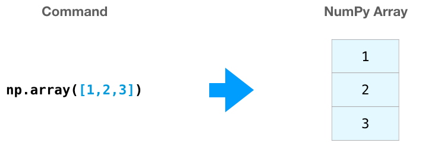

NumPy#
What is numpy?
NumPy is the core python library for numerical and scientific computing.
A numpy array is a grid of values, all of the same type, and is indexed by nonnegative integers.
The array can have any number of dimensions 1D, 2D, 3D, …
The shape of an array is a tuple of integers giving the size of the array along each dimension. For example a 1D vector of size 4 is (4,). a matrix of size 2 is (2,2), a matrix with size 2x5 is (2,5)
Numpy arrays can be generates either by feeding lists to numpy or on the fly using numpy special methods
Additional resources to learn numpy
# To use numpy you have to first import it
import numpy as np
print(np.__version__)
1.24.4
Array Creation#
Generating numpy arrays from lists#
data=np.array([1,2,3])
data
array([1, 2, 3])
data.shape
(3,)

b = np.array([[1,2,3],[4,5,6]]) # Create a 2D array
print(b)
[[1 2 3]
[4 5 6]]
print(b.shape)
print(b[0, 0], b[0, 1], b[1, 0])
(2, 3)
1 2 4
# Question: what does this do?
np.array( [ x**2 for x in range(100) if x%3==0 ])
array([ 0, 9, 36, 81, 144, 225, 324, 441, 576, 729, 900,
1089, 1296, 1521, 1764, 2025, 2304, 2601, 2916, 3249, 3600, 3969,
4356, 4761, 5184, 5625, 6084, 6561, 7056, 7569, 8100, 8649, 9216,
9801])
Array vs list cration: which is faster?#
Jupyter notebooks have a nice built-in method to time how long a line of code takes to execute. In a Jupyter notebook, when a line starts with %timeit followed by code, the kernel runs the line of code multiple times and outputs an average of the time spent to execute the line of code.
We can use %timit to compare a mathematical operation on a Python list using a for loop to the same mathematical operation on a NumPy array.
lst = list(range(10000))
%timeit for i, item in enumerate(lst): lst[i] = lst[i]*2
2.56 ms ± 730 µs per loop (mean ± std. dev. of 7 runs, 1,000 loops each)
nparray = np.arange(0,10000,1)
%timeit 2*nparray
3.75 µs ± 4.42 ns per loop (mean ± std. dev. of 7 runs, 100,000 loops each)
With 10,000 integers, the Python list and for loop takes an average of single milliseconds, while the NumPy array completes the same operation in tens of microseconds. This is a speed increase of over 100x by using the NumPy array (1 millisecond = 1000 microseconds).
For larger lists of numbers, the speed increase using NumPy is considerable.
Generating arrays using special methods#

a = np.zeros((5,8)) # Create an array of all zeros
print(a)
[[0. 0. 0. 0. 0. 0. 0. 0.]
[0. 0. 0. 0. 0. 0. 0. 0.]
[0. 0. 0. 0. 0. 0. 0. 0.]
[0. 0. 0. 0. 0. 0. 0. 0.]
[0. 0. 0. 0. 0. 0. 0. 0.]]
b = np.ones((1,5)) # Create an array of all ones
print(b)
[[1. 1. 1. 1. 1.]]
e = np.random.random((4,4)) # Create an array filled with random values
print(e)
[[0.8020125 0.48733999 0.75598875 0.18482663]
[0.90868108 0.46760743 0.46950493 0.98088945]
[0.25159454 0.31524169 0.6842106 0.94967694]
[0.21917395 0.94661734 0.401883 0.40045594]]
x = np.linspace(1,100,10) # create an array between 1 and 100 divided by 10 segments
print(x)
[ 1. 12. 23. 34. 45. 56. 67. 78. 89. 100.]
y = np.arange(1,100,5) # create an array strting from 1 to 100 in 10 incremenets
print(y)
[ 1 6 11 16 21 26 31 36 41 46 51 56 61 66 71 76 81 86 91 96]
c = np.full((2,2), 7.5) # Create a constant array
print(c)
[[7.5 7.5]
[7.5 7.5]]
d = np.eye(5) # Create a 3x3 identity matrix
print(d)
[[1. 0. 0. 0. 0.]
[0. 1. 0. 0. 0.]
[0. 0. 1. 0. 0.]
[0. 0. 0. 1. 0.]
[0. 0. 0. 0. 1.]]
k = np.tile(d,3) # repeat the array d 3 times
k
array([[1., 0., 0., 0., 0., 1., 0., 0., 0., 0., 1., 0., 0., 0., 0.],
[0., 1., 0., 0., 0., 0., 1., 0., 0., 0., 0., 1., 0., 0., 0.],
[0., 0., 1., 0., 0., 0., 0., 1., 0., 0., 0., 0., 1., 0., 0.],
[0., 0., 0., 1., 0., 0., 0., 0., 1., 0., 0., 0., 0., 1., 0.],
[0., 0., 0., 0., 1., 0., 0., 0., 0., 1., 0., 0., 0., 0., 1.]])
Common array creation methods#
Function |
Description |
|---|---|
|
Array from a list |
|
Array with know step |
|
Creates an array from [start, stop] with num number of steps |
|
Same but on log scale |
|
Array of zeros |
|
Array of ones |
|
Two 2D arrays from two 1D arrays |
Common array creation methods involving random numbers#
Function |
Description |
|---|---|
|
Generates random floats in the range [0,1) in an even distribution |
|
Generates random integers from a given range in an even distributionb |
|
Generates random floats in a normal distribution centered around zero |
|
Generates random integers in a binomial distribution; takes a probability , |
|
Generates random floats in a Poisson distribution; takes a target mean argument ( |
|
Selects random values taken from a 1-D array or range |
|
Randomizes the order of an array |
Indexing, slicing and shaping arrays#
Slicing: Similar to Python lists, numpy arrays can be sliced. Since arrays may be multidimensional, you must specify a slice for each dimension of the array:
data=np.array([1,2,3])
data[0:3]
array([1, 2, 3])

data = np.array([[1,3,5], [2,4,6]])
data.T
array([[1, 2],
[3, 4],
[5, 6]])

a = np.array([[1,2,3,4], [5,6,7,8], [9,10,11,12]])
a.shape
(3, 4)
a.shape
(3, 4)
a[1,:4] #
array([5, 6, 7, 8])
a[1,3]
8
a[:,-1] # last column
array([ 4, 8, 12])
a[-1,:] # last row
array([ 9, 10, 11, 12])
Same principles of slicing and shapes applies to the N-dimensional arrays.

Vectorized operations with numpy#
Basic mathematical functions operate elementwise on arrays, and are available both as operator overloads and as functions in the numpy module:
x = np.array([1,2,3,4])
y = np.array([5,6,7,8])
# Elementwise sum; both produce the array
print(x + y)
[ 6 8 10 12]
# Elementwise difference; both produce the array
print(x - y)
[-4 -4 -4 -4]
# Elementwise product; both produce the array
print(x * y)
[ 5 12 21 32]
print(x / y)
[0.2 0.33333333 0.42857143 0.5 ]
print(np.sqrt(x))
[1. 1.41421356 1.73205081 2. ]
1.5*x # elementwise multiplication!
array([1.5, 3. , 4.5, 6. ])
y+3 # elementwise addition.
array([ 8, 9, 10, 11])
As last two examples show can also do operations on arrays with unequal shapes! These are powerful operations which follow set of rules called broadcasting. See the end for these rules and examples
To use vector,matrix dot product between A and B use A@B
x = np.array([[1,2],[3,4]])
y = np.array([[5,6],[7,8]])
v = np.array([9,10])
w = np.array([11, 12])
# Inner product of vectors; both produce 219
print(v@w)
219
# Matrix / vector product; both produce the rank 1 array [29 67]
print(x@v)
[29 67]
# Matrix / matrix product; both produce the rank 2 array
print(x@y)
[[19 22]
[43 50]]
Aggregation#
Numpy provides many useful functions for performing computations on arrays; one of the most useful is sum:
x = np.array([[1,2],[3,4]])
np.sum(x,axis=1)
array([3, 7])
print(np.sum(x)) # Compute sum of all elements; prints "10"
print(np.sum(x, axis=0)) # Compute sum of each column; prints "[4 6]"
print(np.sum(x, axis=1)) # Compute sum of each row; prints "[3 7]"
10
[4 6]
[3 7]
print(x.max())
print(x.min())
4
1
Reshaping arrays#
x=np.array([1,2,3,4,5,6,7,8,9,10])
x=x.reshape(2,5)
x
array([[ 1, 2, 3, 4, 5],
[ 6, 7, 8, 9, 10]])
x=x.reshape(5,2)
x
array([[ 1, 2],
[ 3, 4],
[ 5, 6],
[ 7, 8],
[ 9, 10]])
# transpose matrix
x.T
array([[ 1, 3, 5, 7, 9],
[ 2, 4, 6, 8, 10]])
# add an empty dimension
y = np.arange(3)
print(y.shape)
z = [y: np.newaxis]
print(z.shape)
print(z)
Cell In[43], line 6
z = [y: np.newaxis]
^
SyntaxError: invalid syntax
Broadcasting rules of numpy arrays#
Broadcasting is a powerful mechanism that allows numpy to work with arrays of different shapes when performing arithmetic operations. Frequently we have a smaller array and a larger array, and we want to use the smaller array multiple times to perform some operation on the larger array.
The rules of broadcasting are:
Rule 1: If the two arrays differ in their number of dimensions, the shape of the one with fewer dimensions is padded with ones on its leading (left) side.
Rule 2: If the shape of the two arrays does not match in any dimension, the array with shape equal to 1 in that dimension is stretched to match the other shape.
Rule 3: If in any dimension the sizes disagree and neither is equal to 1, an error is raised.

Examples of broadcasting
data = np.array([[1,2],[3,4],[5,6]])
ones_row = np.array([1,1])
data.shape, ones_row.shape
data
ones_row
data.shape, ones_row.shape
data+ones_row
Let us see both rules in action on another example
a = np.arange(3).reshape((3, 1))
print(a)
print(a.shape)
b = np.arange(3)
print(b)
print(b.shape)
Lets predict a+b sum. By first rule the sum of arrays with shapes (3,1)+(3,) are broadcast to (3,1)+(1,3) then by second rule dimensions one are padded to match the shape (3,3)+(3,3)
a+b
numpy application example
Calculate the sinc function: sin(r)/r. Use a Cartesian x,y grid
and calculate ``r = sqrt(x**2+y**2)`` with 0 in the center of the grid.
Calculate the function for -15,15 for both x and y.
Pandas#
You may thinkg of numpy as enhancing functionality of lists for numerical computations. In the same vein you can think of pandas as enahcnign dicitonaires to deal with heteogenuous categorical data.
Pandas is widely used by data analysts from all disciplines to carry out rapid data cleaning, statistical analysis and plotting. The DataFrame is the ore object of pandas whihc stores observables as columns whith rows indicating measurments or samples. Lets create an example
import pandas as pd
import numpy as np
A = pd.DataFrame({'Time': [1,2,3,4,5],
'Energy': [10,20,30,40,50]
})
A
A['velocity'] = np.zeros(5)
A.columns
A.index
# acess underlying values as numpy arrays
A['Energy'].values
Exercises#
1. Predict and explain the following statements
Create an array of the numbers
1,5,19,30Create an array of the numbers
-3,15,0.001,6.02e23Create an array of integers between -10 and 10
Create an array of 10 equally spaced angles between 0 and \(2\pi\)
Create an array of logarithmically spaced numbers between 1 and 1 million. Hint: remember to pass exponents to the
np.logspace()function.Create an array of 20 random integers between 1 and 10
Create an array of 30 random numbers with a normal distribution
Predict the outcome of the following operation between two NumPy arrays. Test your your prediction.
\[\begin{split} \left[ \begin{array}{cc} 1 & 1 \\ 2 & 2 \end{array} \right] + \left[1 \right] = \,\, ?\end{split}\]Predict the outcome of the following operation between two NumPy arrays. Test your your prediction.
\[\begin{split} \left[ \begin{array}{ccc} 1 & 8 & 9 \\ 8 & 1 & 9 \\ 1 & 8 & 1 \end{array} \right] + \left[ \begin{array}{cc} 1 & 1 \\ 1 & 1 \end{array} \right] = \,\, ? \end{split}\]Predict the outcome of the following operation between two NumPy arrays. Test your your prediction.
\[\begin{split} \left[ \begin{array}{cc} 1 & 8 \\ 3 & 2 \end{array} \right] + \left[ \begin{array}{cc} 1 & 1 \\ 1 & 1 \end{array} \right] = \,\, ?\end{split}\]
2. Array Manipulation
Create an array
Bthat contains integers 0 to 24 (including 24) in one row. Then reshapeBinto a 5 row by 5 column arrayExtract the 2nd row from
B. Store it as a one column array calledx.Store the number of elements in array
xin a new variable calledy.Extract the last column of
Band store it in an array calledz.Store a transposed version of
Bin an array calledt.
3. Arrray slicing
The 1D NumPy array
Gis defined below. But your code should work with any 1D NumPy array filled with numeric values.
G = np.array([5, -4.7, 99, 50, 6, -1, 0, 50, -78, 27, 10])
Select all of the positive numbers in
Gand store them inx.Select all the numbers in
Gbetween0and30and store them iny.Select all of the numbers in
Gthat are either less than-50or greater than50and store them inz.
Generate a one-dimensional array with the following code and index the 5th element of the array.
arr = np.random.randint(0, high=10, size=10)
Generate a two-dimensional array with the following code.
arr2 = np.random.randint(0, high=10, size=15).reshape(5, 3)
a. Index the second element of the third column.
b. Slice the array to get the entire third row.
c. Slice the array to access the entire first column.
d. Slice the array to get the last two elements of the first row.
4. random numbers
For the following randomly-generated array:
arr = np.random.rand(20)
a. Find the index of the largest values in the following array.
b. Calculate the mean value of the array.
c. Calculate the cumulative sum of the array.
d. Sort the array.
Generate a random array of values from -1 \(\rightarrow\) 1 (exclusive) and calculate its median value. Hint: start with an array of values 0 \(\rightarrow\) 1 (exclusive) and manipulate it.
Generate a random array of integers from 0 \(\rightarrow\) 35 (inclusive) and then sort it.
Hydrogen nuclei can have a spin of +1/2 and -1/2 and occur in approximately a 1:1 ratio. Simulate the number of +1/2 hydrogen nuclei in a molecule of six hydrogen atoms and plot the distribution. Hint: being that there are two possible outcomes, this can be simulated using a binomial distribution.
Generating an Combining arrays – Bohr hydrogen atom.
a. Create an array containing the principle quantum numbers (n) for the first eight orbits of a hydrogen atom (e.i., 1 \(\rightarrow\) 8). b. Generate a second array containing the energy (J) of each orbit in part A for a Bohr model of a hydrogen atom using the equation \(E = -2.18 \times 10^{-18}J (\frac{1}{n^2} )\) c. Combine the two arrays from parts A and B into a new 8 \(\times\) 2 array with the first column containing the principle quantum numbers and the second containing the energies. d. Compute transition energies as a function of quantum number separation and make a plot